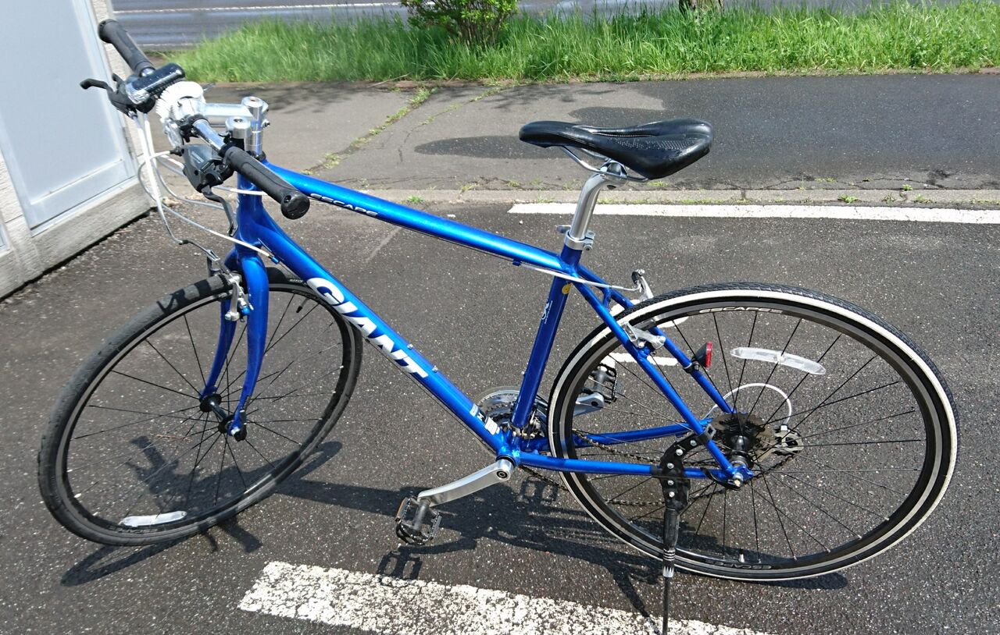
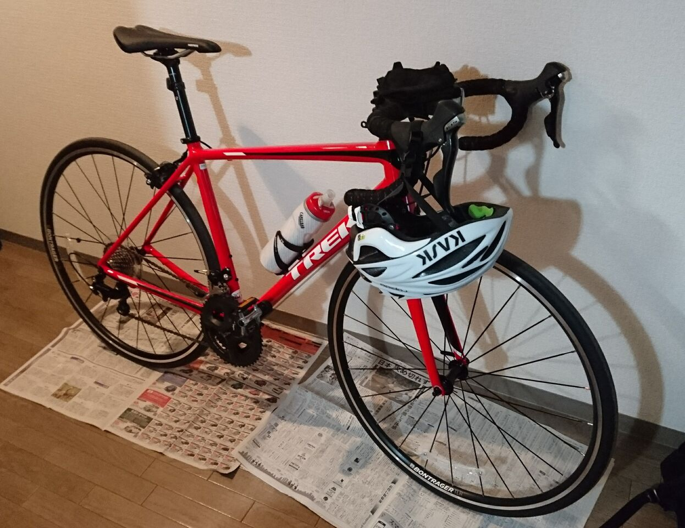

人物
経歴
NITTC（情報工学科） → NITTC（専攻科) → ITエンジニア（予定）
趣味その他
自転車乗ったり電子ピアノ弾いたりします。
ねこふんじゃったを弾けるようになったのが最近の成果です。
自転車はGIANTのEscape R3 / Trek Èmonda Alr5


プログラミング
よく触れる言語は主に研究でRとPython。
触れた事があるのは Common Lisp/Scheme/C/Java/PHP などなど。